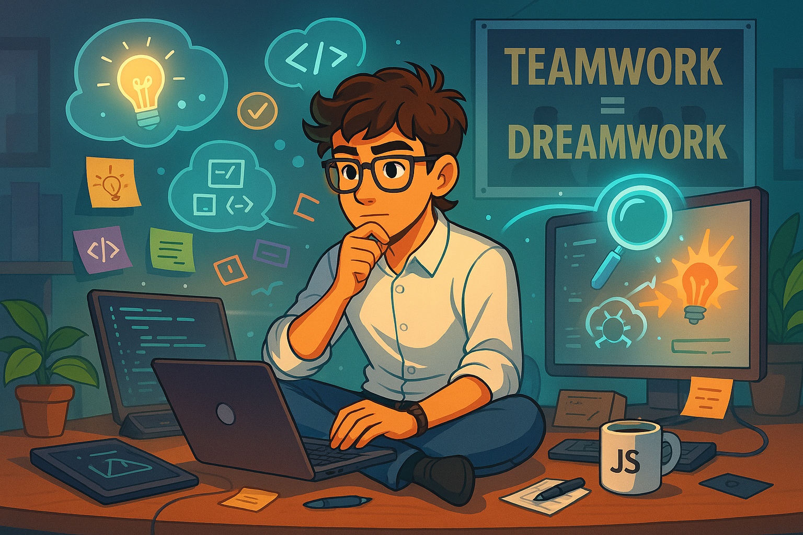

A propos
Hey, je suis Hugo Straseele
🎓 Étudiant français en développement web, je me spécialise dans le front-end avec une vraie passion pour tout ce qui touche à l’expérience utilisateur. J’adore transformer des idées en sites web concrets, beaux et efficaces.
🗺️ Que ce soit pour créer des interfaces modernes, rendre un site fluide ou optimiser l’accessibilité, je mets un point d’honneur à coder propre et à respecter les bonnes pratiques du web.
🚀 Curieux et motivé, je suis toujours partant pour relever de nouveaux défis, découvrir des technos, et continuer à progresser dans ce domaine qui bouge non-stop.

Mes langages préférés
Timeline de mon parcours scolaire
A Venir
Obtention de mon BUT Informatique
Premier pas dans l'informatique
C’est en classe de Première, grâce à la spécialité NSI, que j’ai découvert l’univers du code. J’y ai appris les bases de l’algorithmique en manipulant le langage Python, à travers des exercices concrets et progressifs. Cette première approche m’a donné le déclic : j’ai tout de suite accroché au raisonnement logique et à la façon dont on peut résoudre des problèmes par le code. Une vraie porte d’entrée dans le monde du développement
Obtention de mon Bac
En Terminale, j’ai approfondi mes connaissances en algorithmique et en programmation Python toujours via la spé NSI. J’ai commencé à bosser sur des notions plus poussées comme les structures de données, la récursivité ou encore la POO. Cette année-là, j’ai vraiment compris que le développement allait devenir plus qu’un simple cours pour moi : une vraie passion
BUT première année
Pendant ma première année de BUT Informatique, j’ai posé des bases solides en programmation (Java, C), en algorithmique avancée, et en développement web. J’ai aussi découvert des domaines clés comme les bases de données, les réseaux et la gestion de projet. Cette année m’a permis de vraiment structurer ma logique de dev, de bosser en équipe et de passer de simples scripts à des projets concrets et fonctionnels
Ma personnalité
Ce que j’aime
En dehors du code, j’ai plein de passions qui nourrissent ma créativité et ma façon de penser.
🎮 Les jeux vidéo occupent une grosse place dans mon quotidien — j’adore analyser les mécaniques, les univers, et ce qu’ils peuvent m’apprendre en termes d’interaction et de design.
📚 Côté lecture, je suis fan de Stephen King pour ses ambiances sombres, et de Harry Potter pour l’imaginaire et la nostalgie.
🎬 Le cinéma, c’est ma façon de m’évader : que ce soit des thrillers bien ficelés ou des films d’auteur, j’aime décortiquer les récits comme un bon algorithme.
🎧 Et bien sûr, la musique m’accompagne tout le temps, surtout quand je code. Un bon son et je rentre dans ma bulle de concentration.
Ces univers m’inspirent, influencent ma façon de créer, et m’aident à toujours garder l’esprit ouvert.